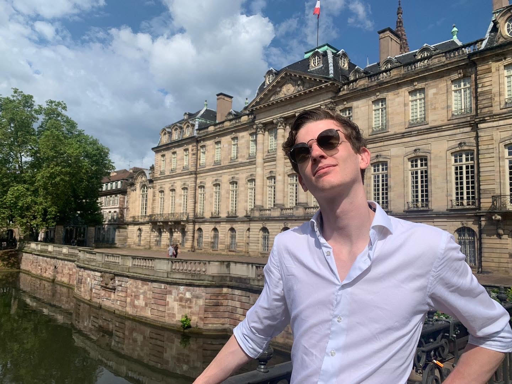

Lucas van Haren

Contact Me
Summary
I'm a hard working person willing to put in the hours needed even if it means pushing the extremes. Also a fast learner that has a little bit of a problem with wanting to perfect everything.
Education
- I've gratuated from vellesan college - havo in 2021.
- I started a study technical phyisics at HVA in 2021 but dropped out after not enjoying my time at the study.
Work Experience
-
Spijs Traiteur, IJmuiden - kitchen helper
Jul 2017 - Aug 2019
-
Dekamarkt, IJmuiden - bread section
Aug 2019 - Jun 2021
-
Goemans, IJmuiden - baker, cashier
Jul 2021 - Dec 2021
-
HMS, Amsterdam - cashier, barista, chef
Jan 2022 - Mar 2022
-
Urgenda, Zaandam - trainee, customer support
Sep 2021 - Mar 2023
-
Carillon Hotel, Haarlem - chef, server, teamleader
Mar 2022 - Present
Skills
- Leadership
- Customer experience
-
Multilingual
- Dutch - Fluent
- English - Fluent
- German - Avarage
- French - Basic
- Portugeus - Basic
- Web development
Certivications
- FreeCodeCamp.org responsive web design
- Udemy The Complete 2024 Web Development Bootcamp